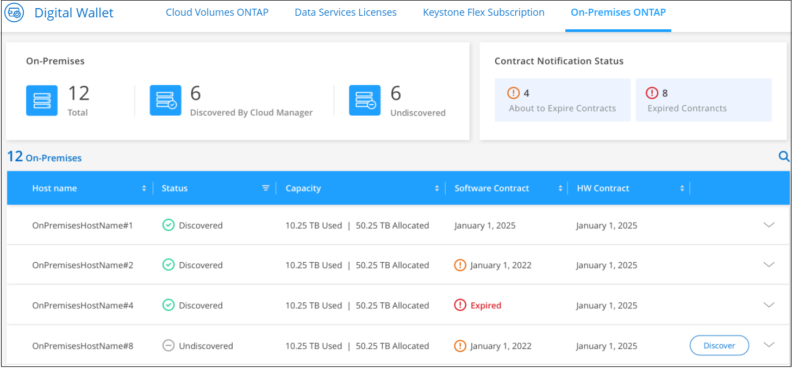
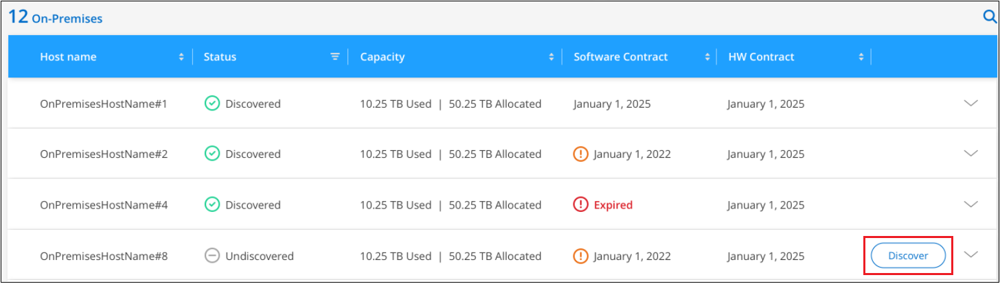

要求變更文件
要求變更文件 編輯此頁面
編輯此頁面 瞭解如何作出貢獻
瞭解如何作出貢獻探索內部部署ONTAP 的叢集
貢獻者
Cloud Manager 可在 ONTAP 內部部署環境、 NetApp 私有儲存組態和 IBM Cloud 中探索這些功能集區。將內部叢集新增至Cloud Manager Canvas可讓您使用Cloud Volumes ONTAP 與您的VMware及其他雲端儲存解決方案相同的工具來管理這些叢集。
除了能夠在這些系統上配置儲存設備、將這些系統新增至Cloud Manager也能輕鬆檢視Digital Wallet中的硬體與軟體合約狀態資訊、並為這些叢集設定關鍵雲端型服務。這包括將資料複寫到雲端、將資料備份到雲端、將冷資料分層到雲端、以及對該資料執行法規遵循掃描。
需求
-
安裝在雲端供應商或內部部署環境中的 Connector 。
如果您想要將冷資料分層至雲端、則應根據您計畫將冷資料分層的位置來審查 Connector 的需求。
-
將叢集新增至 Cloud Manager 的叢集管理 IP 位址和管理使用者帳戶密碼。
Cloud Manager 使用 ONTAP HTTPS 探索各個叢集。如果使用自訂防火牆原則、則必須符合下列需求：
-
連接器主機必須允許透過連接埠 443 進行傳出 HTTPS 存取。
如果 Connector 位於雲端、則預先定義的安全性群組會允許所有傳出通訊。
-
這個支援叢集必須允許透過連接埠 443 進行傳入 HTTPS 存取。 ONTAP
預設的「管理」防火牆原則允許從所有 IP 位址進行傳入 HTTPS 存取。如果您修改此預設原則、或是建立自己的防火牆原則、則必須將 HTTPS 傳輸協定與該原則建立關聯、並啟用從 Connector 主機存取。
-
-
一組有效的NetApp支援網站認證資料。瞭解如何操作 "將新增至Cloud Manager的NSS帳戶"。
檢視已探索及未探索的內部叢集
您可以使用Cloud Manager中的_Digital Wallet或_Discovery_服務來檢視、探索及管理ONTAP 內部支援合約中的內部叢集。
若要從_Digital Wallet檢視內部叢集和授權詳細資料：
-
從Cloud Manager中選取* Digital Wallet *服務。
-
按一下*內部部署ONTAP 的S還原*索引標籤。

顯示您的叢集時、會顯示Cloud Manager是否已探索到這些叢集的狀態。ONTAP
如果系統提示您先輸入NetApp支援網站（NSS）帳戶認證、請在支援儀表板中輸入認證資料。新增帳戶後、即會顯示該帳戶中包含的叢集。
若要從_Discovery服務檢視內部叢集和授權詳細資料：
-
從Cloud Manager中選取* Discovery *服務。
-
如Active IQ 有必要、請選取與您的NSS帳戶相關聯的登入資訊。

您擁有有效支援合約的支援叢集會顯示狀態、指出是否已在Cloud Manager中找到這些叢集。ONTAP

|
如果您的支援合約到期、系統就會從「探索」頁面移除。不過、您可以繼續在他們的工作環境中管理這些系統。瞭解如何操作 "請向 Active IQ 支援顧問續約"。 |
檢視叢集資訊和合約詳細資料
您可以使用_Digital Wallet檢視叢集詳細資料、以及硬體與軟體合約狀態。
-
在* Digital Wallet *中、按一下*內部部署ONTAP 的S還原*索引標籤。
每個叢集的軟體合約和硬體合約到期日均會顯示在行上。
-
如果合約接近到期日、或已過期、您可以按一下Cloud Manager右下角的聊天圖示、要求延長合約期限。
-
如需瞭解其他詳細資料的叢集、請按一下
 以展開叢集資訊。
以展開叢集資訊。
從Cloud Manager探索內部叢集
您可以ONTAP 從_Digital Wallet 、_Discovery_服務或_Canvas、在Cloud Manager中探索內部的等叢集。一旦發現、他們就能在Cloud Manager中以工作環境的形式提供、以便您管理叢集。
從Digital Wallet探索叢集
您可以ONTAP 從Digital Wallet中探索自己的核心叢集、並將其新增為工作環境。
-
在* Digital Wallet *中、按一下*內部部署ONTAP 的S還原*索引標籤。

-
按一下* Discover（探索）*以瞭解您要透過Cloud Manager管理的叢集。
-
在_探索ONTAP 更新叢集_頁面上、輸入管理員使用者帳戶的密碼、然後按一下*探索*。

請注意、叢集管理IP位址是根據Digital Wallet中的資訊填入。
叢集的狀態會在「內部部署ONTAP 」（_on－en——內部部署）頁面中變成*已探索*。
Cloud Manager會使用叢集名稱做為工作環境名稱、探索叢集並將其新增至Canvas中的工作環境。

您可以在右側面板中啟用此叢集的服務、以便在叢集之間複寫資料、設定資料分層至雲端、將磁碟區備份至雲端、或在磁碟區上執行法規遵循掃描。您也可以建立新磁碟區或啟動System Manager來執行進階工作。
從「Discovery」（探索）頁面探索叢集
您可以ONTAP 從「Discovery」（探索）頁面探索您的叢集、並將其新增為工作環境。
-
在* Discovery （探索）頁面中、按一下*叢集庫存*索引標籤。

-
按一下* Discover（探索）*以瞭解您要透過Cloud Manager管理的叢集。
-
在_選擇位置_頁面*內部部署ONTAP 的SURE*已預先選取、所以只要按一下*繼續*即可。
-
在「_ ONTAP 此叢集詳細資料_」頁面上、輸入管理員使用者帳戶的密碼、然後按一下「新增」。

請注意、叢集管理IP位址是根據Active IQ 來自下列項目的資訊填入。
-
在「Details & Credentials」頁面上、叢集名稱會新增為「工作環境名稱」、因此只要按一下「* Go *」即可。
Cloud Manager會使用叢集名稱做為工作環境名稱、探索叢集並將其新增至Canvas中的工作環境。
您可以在右側面板中啟用此叢集的服務、以便在叢集之間複寫資料、設定資料分層至雲端、將磁碟區備份至雲端、或在磁碟區上執行法規遵循掃描。您也可以建立新磁碟區或啟動System Manager來執行進階工作。
從「畫版」頁面探索叢集
您可以從ONTAP 「畫版」頁面探索您的叢集、並將其新增為工作環境。如果叢集目前沒有支援合約、而未列在「Digital Wallet」或「Discovery」頁面中、則可使用這些步驟。
-
在「畫版」頁面上、按一下「 * 新增工作環境 * 」、然後選取「 * 內部部署 ONTAP 的更新環境 * 」。
-
如果出現提示、請建立連接器。
如需詳細資料、請參閱上述連結。
-
在「_ ONTAP 不適用叢集詳細資料_」頁面上、輸入叢集管理IP位址、管理員使用者帳戶的密碼、然後按一下「新增」。
-
在「詳細資料與認證資料」頁面上、輸入工作環境的名稱與說明、然後按一下「執行」。
Cloud Manager會探索叢集、並將其新增至畫版中的工作環境。
您可以在右側面板中啟用此叢集的服務、以便在叢集之間複寫資料、設定資料分層至雲端、將磁碟區備份至雲端、或在磁碟區上執行法規遵循掃描。您也可以建立新磁碟區或啟動System Manager來執行進階工作。